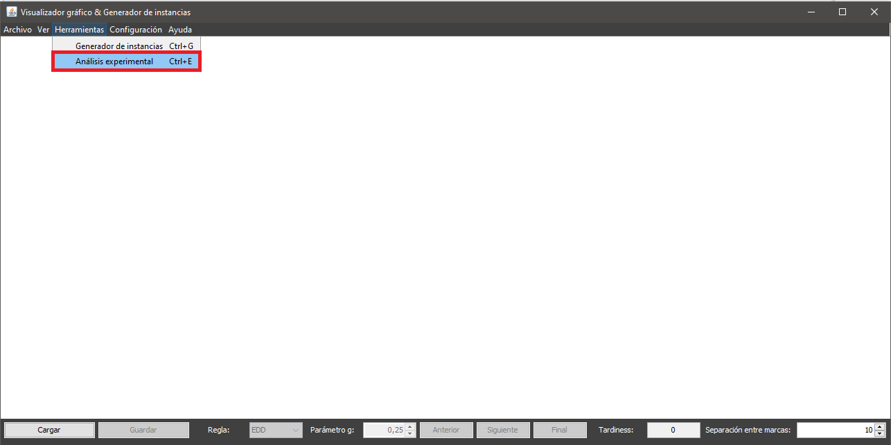

Para acceder a la herramienta de análisis experimental no
es necesario que se dé ninguna condición
específica y puede hacerse a través de una de estas
opciones:
Utilizando la opción de menú Herramientas >
Análisis experimental
Utilizando el atajo Ctrl+E

El anaálisis experimental puede realizarse de dos maneras
distintas: